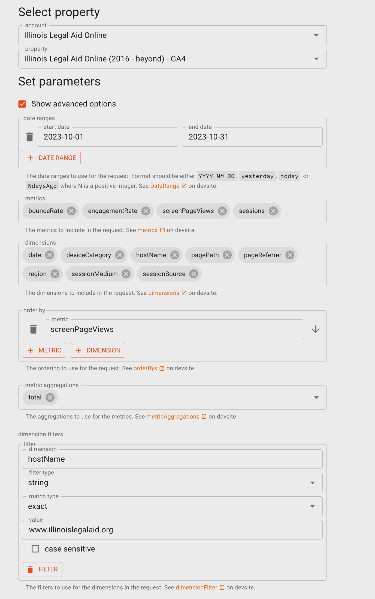

Content metrics in Tableau
Data Sources
Google Analytics 4 Data
Data has to be pulled using Query Explorer and combined into CSV files for use in Tableau.
Specifically, the Query Explorer should look like the image below:
The explorer exports data in increments of 10,000 records. This query results in nearly 400,000 records so the process must be repeated for every 10K records.
Make the request
Copy the JSON to clipboard
Open in the text editor and strip everything before rows and the totals segment at the bottom
Copy the cleaned text into a JSON to CSV converter and export
Once all of these are complete, combine the individual CSVs into one file. On a Mac, the easiest way to combine is to put all the CSV files into a single directory. Then, in Terminal, navigate to the directory and enter the command below which will result in a combined CSV named combined.csv:
cat *.csv > combined.csv
Note
We are hoping this will change as GA4 grows or that we can find a better way to automated.
Page View data
Page view data contains the following dimensions: * Date (formatted as mm/dd/yyyy) * deviceCategory (mobile, tablet, desktop) * pagePath * pageReferrer * region * sessionMedium * sessionSource
And the following metrics:
Bounce rate
Engagement rate
Page views
Sessions
Outgoing Link Events
Outgoing link data contains these dimensions:
Date
deviceCategory
linkDomain
linkUrl
pagePath
pageReferrer
region
sessionMedium
sessionSource
And these metrics:
Engagement rate
Event count
Sessions
When cleaned up in Tableau
Data is filtered on host name contains www.illinoislegal; this filters out dev and staging data.
Region is cleaned up to Illinois, US (Not Illinois), International
CMS Files
Static sources
These sources rarely change but are used in data cleanup:
Navigational_IA export file which contains the term IDs and names of the second level naviational categories
Categories export file which contains the term IDs and names of the top level navigational categories
Content type export file which contains the English language content format names and term ids
Legal Content Flow
The Legal content flow relies on:
an exported CSV from “Find Legal Content”
the navigational_ia export to replace primary and secondary legal term IDs with their English language names
the categories export
the content_format export to replace the content type in Legal Content with the name of the format, in English, instead of the term ID
When processed through the Prep Builder, the resulting file is a data structure as follows:
Column |
Description |
Type |
|---|---|---|
ID |
Node ID |
Number |
Title |
English content title |
String |
Content type |
Drupal content type |
String |
Created |
Date content was created |
Date |
Last changed |
Last time the content was changed in any way |
Date |
Last substantive revision |
Date the content was revised in a substantive way, as determined by the content team |
Date |
Last expert review |
Date the content was last reviewed by a SME |
Date |
Language |
The language of the content |
String |
Full url |
Full website url to content |
String |
Page path |
page path of the content |
String |
Subtopic |
Level 2 taxonomy term, in English |
String |
Category |
Primary category, in English |
String |
Content format |
Name of content format |
String |
To pull data into Tableau cloud:
Run the Find Legal Content report, unfiltered and export to CSV.
Google Analytics Page Views Flow
The Google Analytics flow merges a subset of Google Analytics data to be able to create reports that use page view data. This flow relies on:
CSV files exported from universal analytics from January 1, 2017 - June 30, 2023
An API call to Google Analytics 4 with data from July 1, 2023 - forward
It produces a Tableau file that merges and cleans up the data into a single set of metrics that are available in both Universal Analytics and GA4.
Column |
Description |
Type |
|---|---|---|
eventDate |
Date page was viewed |
Date |
engagementRate |
GA4 only |
Number |
bounceRate |
GA4 only |
Number |
deviceCategory |
desktop, mobile, or tablet |
String |
sessionMedium |
medium used (display, email, cpc organic) |
String |
sessionSource |
Direct, referral domain, etc |
String |
pagePath |
Path of the page accessed, without hostname |
String |
pageReferrer |
URL of the previous page |
String |
screenPageViews |
Number of page views |
Number |
sessions |
Number of sessions |
Number |
Unique pageviews |
Number of unique pageviews |
Number |
Bounces |
Universal analytics only |
Number |
Content Revisions Flow
This flow takes data from our Content Revisions report exported to CSV.
It produced a cleaned up data file that can be used to track revision activity, including number of SME reviews, substantive updates, and can be tied back to data in the legal content flow on tne node ID.
Column |
Description |
Type |
|---|---|---|
Node ID |
Node of the content revised |
Number |
Revision ID |
Unique identifier of the revision |
Number |
SME date |
Date of the last SME review, at the time of the revision |
Date |
Staff revised date |
Date of the last staff revision, at the time of the revision |
Date |
Revision saved |
Date the revision was created |
Date |
Revision log message |
Message entered when revision was created |
String |
Language |
Language associated with the revision |
String |
Revision author |
Name of the person who created the revision |
String |
Legal Content Volunteer Flow
This flow takes data from the ILAO LCV Event and Engagement report pulled from Salesforce. It produces two output files:
A file that lists each node reviewed with the LCV information
The LCV engagement information
Nodes Reviewed
Column |
Description |
Type |
|---|---|---|
NodeID |
Node of the content reviewed |
Number |
EngagementID |
SF Engagement ID |
String |
Contact |
Name of the LCV |
String |
Organization |
Primary affiliation of the LCV |
String |
Date completed |
Date assignment was completed |
Date |
LCV Assignments
Column |
Description |
Type |
|---|---|---|
NodeID |
Node of the content reviewed |
Number |
Event |
ILAO event name from SF |
String |
EngagementID |
SF Engagement ID |
String |
Contact |
Name of the LCV |
String |
Organization |
Primary affiliation of the LCV |
String |
Date completed |
Date assignment was completed |
Date |
Total Pieces of Content |
Number of pieces, as entered in Salesforce |
Number |
Hours worked |
Number of Hours, as entered in Salesforce |
Number |
Volunteer assignment subject |
Assignment subject as entered in Salesforce |
String |
Connecting Datasources
Each data source can be connected to other data sources to get specific metrics.
Legal content flow can be connected to Google Analytics flow on the page path. Legal content flow can be connected to Content Revisions on the Node ID Legal content flow can be connected to Nodes Reviewed on the Node ID Nodes Reviewed can be connected to LCV Assignments on the Engagement ID
Dashboard Metrics
Key content metrics
The key content metrics dashboard include:
Total number of pieces of content
Total page views
Total sessions
Average days since last SME review
Average days since last staff revision
Content trends (top 25 pieces of legal content each month, last 12 months)
Total number of SME reviews
Total number of staff revisions
The above can be filtered by:
Language
Primary legal category (Family & Safety, House & Apartment)
Primary secondary legal category (Divoce, Being Evicted)
Date range, unless otherwise indicated above
Note
Law changes should be tracked as a metric but need to confirm how we are doing this.
Legal content volunteer metrics
The key legal content volunteer (LCV) metrics include:
Total number of LCVs who have a completed assignment during a specified time period
Total number of pieces reviewed
Total hours worked
Total page views associated with pieces reviewed
These metrics can be filtered by:
Primary legal category
Primary secondary legal category
Organization
Legal content volunteer
Date range